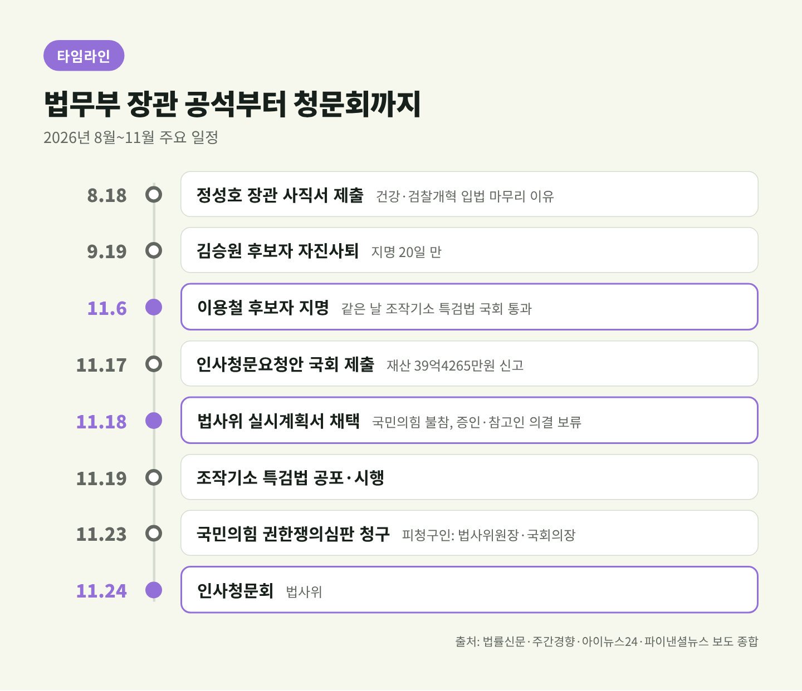
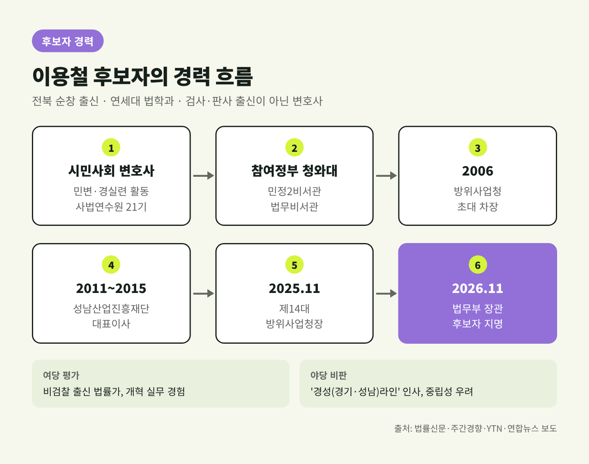
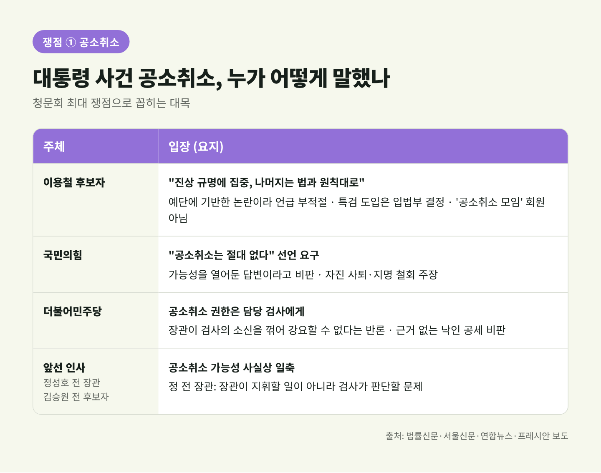
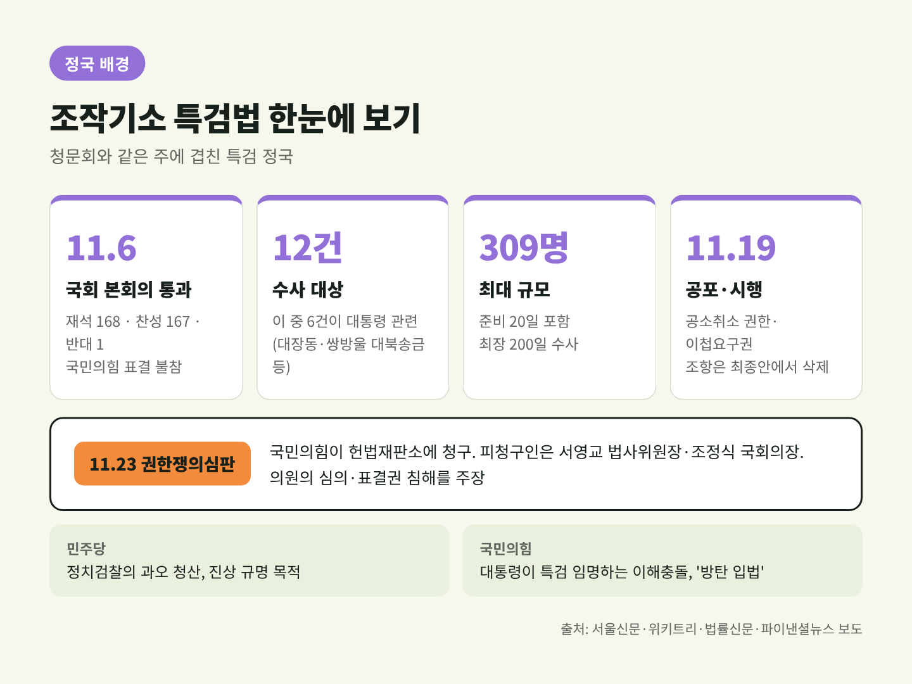
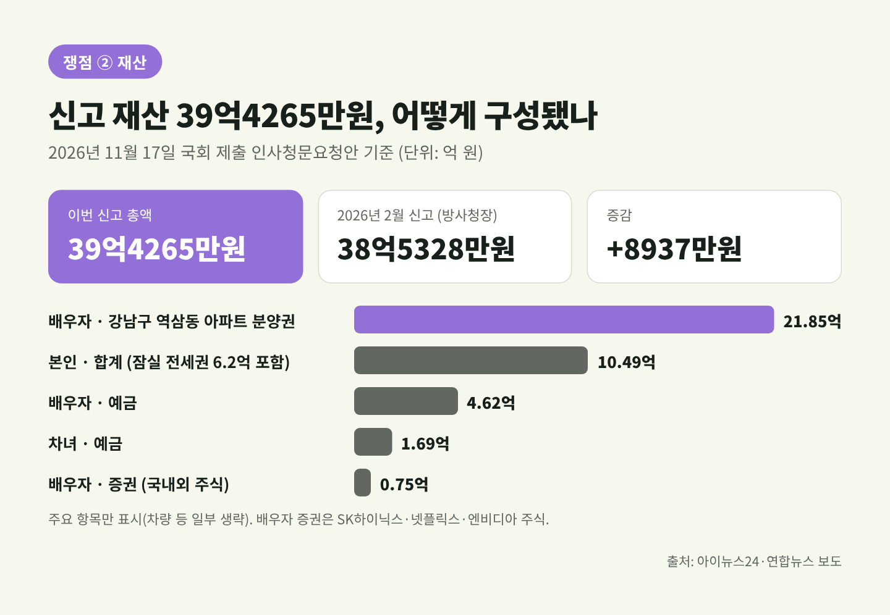
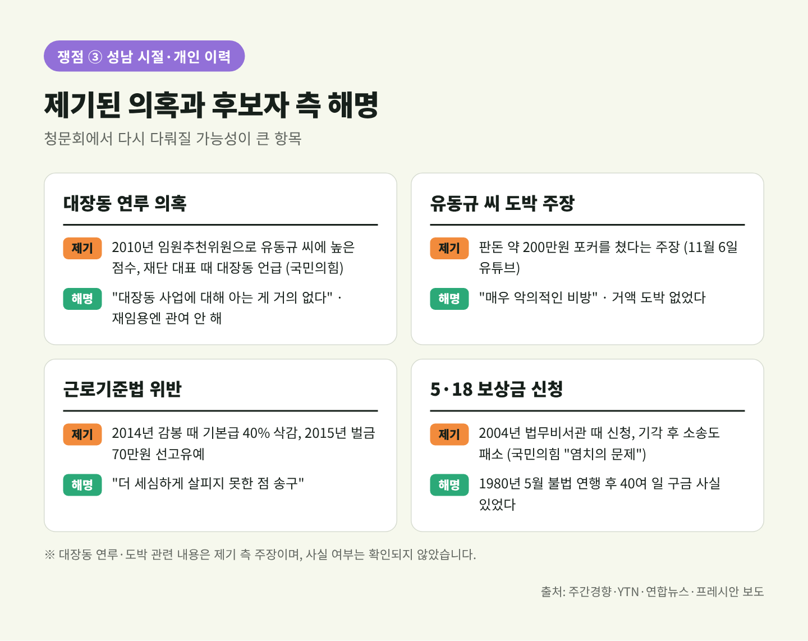

이용철 법무장관 인사청문회 24일, 공소취소·재산·대장동 쟁점 정리
이번 글에서는 11월 24일 국회 법제사법위원회에서 열리는 이용철 법무부 장관 후보자 인사청문회의 쟁점을 정리해 보겠습니다. 청문회는 내일입니다. 결과를 미리 말할 수는 없습니다. 다만 무엇이 다퉈질지는 이미 선명합니다.
3줄 요약
- 법사위는 11월 18일 국민의힘이 불참한 가운데 청문 실시계획서를 채택했습니다. 증인·참고인 의결은 보류됐습니다.
- 최대 쟁점은 이재명 대통령 관련 사건의 '공소취소' 문제입니다. 후보자는 "진상 규명이 먼저, 나머지는 법과 원칙대로"라는 입장입니다.
- 재산 39억4265만원, 배우자 명의 강남 아파트 분양권과 주식, 성남 재단 대표 시절 이력도 검증 대상입니다.
■ 무슨 일인가 — 반쪽으로 시작한 청문 절차
이재명 대통령은 11월 6일 이용철 방위사업청장을 법무부 장관 후보자로 지명했습니다. 인사청문요청안은 11월 17일 국회에 제출됐습니다. 인사청문회법상 국회는 20일 안에 청문 절차를 마쳐야 합니다.
법사위는 11월 18일 전체회의에서 청문 실시계획서를 채택했습니다. 더불어민주당 주도였습니다. 국민의힘 법사위원들은 '조작기소 특검법' 처리에 반발해 회의에 나오지 않았습니다(법률신문·아이뉴스24 보도).
증인과 참고인을 부르는 안건은 표결하지 않았습니다. 여야 간사가 협의를 더 하기로 하고 미뤄 둔 것입니다. 23일 현재까지 증인 채택이나 국민의힘의 청문회 참석 여부가 확정됐다는 보도는 확인되지 않습니다.
후보자 자료 제출 기한은 11월 20일이었습니다(프레시안). 야당이 빠진 채 절차가 시작됐다는 점에서, 내일 청문회의 형식부터가 관전 포인트입니다.

■ 왜 중요한가 — 세 번째 시도, 그리고 바뀐 형사사법체계
이번 지명은 법무부 수장 자리를 채우는 세 번째 시도에 가깝습니다. 정성호 전 장관은 8월 18일 사직서를 냈습니다. 건강상 이유와 함께, 검찰개혁 입법이 마무리된 만큼 새 형사사법체계는 새 리더십 아래서 완성되는 게 바람직하다는 뜻을 밝혔다고 전해집니다(주간경향).
후임으로 지명된 김승원 후보자는 8월 30일 지명 뒤 20일 만인 9월 19일 자진사퇴했습니다. 제약업계 관련 청탁 의혹과, 대통령 사건 공소취소를 추진하는 의원모임(이른바 '공취모') 공동대표 이력이 야당의 집중 공세를 받았습니다(법률신문).
시점도 무겁습니다. 10월 형사소송법 개정으로 검사의 수사권이 사라졌고, 공소청과 중대범죄수사청이 새로 출범했습니다. 후보자 스스로 지명 소감에서 "형사사법체계가 크게 바뀐 시기"라며 "막중한 책임감"을 말했습니다(위키트리). 새 장관은 이 체계를 현장에 안착시키는 첫 책임자가 됩니다.
■ 후보자는 누구인가
이용철 후보자는 전북 순창 출신입니다. 전주 신흥고와 연세대 법학과를 나왔고, 사법연수원 21기입니다. 검사나 판사 출신이 아닌, 민변·경실련 등에서 활동한 시민사회 변호사로 소개됩니다.
경력의 큰 줄기는 두 갈래입니다.
- 참여정부 청와대: 민정수석실 민정2비서관과 법무비서관을 지냈습니다. 이후 2006년 신설된 방위사업청 초대 차장을 맡았다가 약 10개월 만에 물러났습니다.
- 성남과 방위사업청: 2010년 이재명 성남시장 인수위에 참여했고, 2011년 7월부터 2015년까지 성남산업진흥재단 대표이사를 지냈습니다. 2025년 11월 제14대 방위사업청장에 임명됐습니다.
본인은 지명 이유를 참여정부 시절 검경 수사권 조정 등 검찰개혁 업무를 수행한 경험에서 찾았습니다. 여당은 "비검찰 출신 법률가", "숨은 실력자"라고 평가합니다(신현영 민주당 대변인, 연합뉴스 보도). 반면 국민의힘은 "경성(경기·성남)라인", "성남 카르텔" 인사라고 비판합니다(박성훈 수석대변인, YTN 보도). 후보자는 대통령과의 친분이 장관 결격 사유가 될 수는 없다고 반박했습니다.

■ 쟁점 ① 공소취소 — "진상 규명이 먼저"의 해석
가장 큰 쟁점은 대통령 관련 형사사건의 공소취소를 지휘할지 여부입니다(프레시안).
후보자의 답은 일관됩니다. 11월 9일 출근길에서는 "오로지 진상 규명에 집중하고, 나머지 일은 법과 원칙에 따르는 것이 바람직하다"는 취지로 말했습니다. 11월 11일 청문준비단 첫 출근 때는 조금 더 풀어 설명했습니다(법률신문).
- 공소취소 논란은 예측과 예단에 기반한 것이라 언급이 적절치 않다.
- 특검 도입은 입법부의 결정이라 후보자가 평가할 일이 아니다.
- 자신은 '공소취소 모임' 회원이 아니고, 특검 수사 대상 사건의 변호인을 맡은 적도 없다.
- 대장동·쌍방울 대북송금 사건은 충분히 보고받지 못해 평가하기 어렵다.
이 답변은 앞선 두 사람과 결이 다릅니다. 정성호 전 장관과 김승원 전 후보자는 공소취소 가능성을 사실상 일축했습니다. 정 전 장관은 공소취소는 장관이 지휘할 일이 아니라 검사가 판단할 문제라는 입장이었습니다(법률신문).
국민의힘은 이를 '가능성을 열어둔 것'으로 읽습니다. 박충권 수석대변인은 "공소취소는 절대 없다"고 국민 앞에 선언하라고 요구했고, 남은 길은 "자진 사퇴와 지명 철회뿐"이라고 주장했습니다(서울신문).
여당의 반론도 분명합니다. 김의겸 민주당 의원은 공소취소 권한은 수사·공소유지 검사에게 있고, 담당 검사의 소신과 원칙을 꺾어 강요할 수 없다고 말했습니다(CBS 라디오, 연합뉴스 보도). 장관 한 사람의 의지로 결정될 구조가 아니라는 논리입니다.
내일 청문회에서는 이 간극이 정면으로 부딪칠 가능성이 큽니다. "하지 않겠다"는 확답을 받아내려는 쪽과, 예단하지 않겠다는 쪽의 줄다리기입니다.

■ 정국과의 연결 — 조작기소 특검법과 권한쟁의심판
이 청문회가 유독 날카로운 이유는 '조작기소 특검법' 때문입니다.
이 법은 11월 6일 국회 본회의를 통과했습니다. 재석 168명 중 찬성 167명, 반대 1명이었고 국민의힘은 필리버스터 뒤 표결에 불참했습니다(서울신문). 수사 대상은 12건이며, 그중 6건이 대장동·위례·백현동 개발 의혹, 쌍방울 대북송금 등 이 대통령 관련 사건입니다. 최대 309명, 준비 기간 20일을 포함해 최장 200일 동안 수사할 수 있습니다.
논란이 된 '공소취소 권한'과 '이첩요구권' 조항은 최종안에서 빠졌습니다(위키트리). 민주당은 "정치검찰의 과오를 청산"하고 진상을 규명하려는 입법이라고 설명합니다. 국민의힘은 민주당이 추천하고 대통령이 임명하는 구조가 이해충돌이며 "방탄 입법"이라고 맞섭니다.
법은 11월 17일 국무회의 의결과 대통령 재가를 거쳐 11월 19일 공포·시행됐습니다(법률신문). 공소청 내부에서도 일부 부장검사들이 위헌성에 대한 입장을 내 달라고 검찰총장 직무대행에게 요구하는 글을 올렸습니다.
그리고 청문회 하루 전인 11월 23일, 국민의힘은 헌법재판소에 권한쟁의심판을 청구했습니다(파이낸셜뉴스). 피청구인은 서영교 법사위원장과 조정식 국회의장입니다. 국민의힘은 법안 핵심 내용이 여러 차례 바뀌는데도 토론 기회가 부족했고, 수정안이 약 1시간 만에 의결됐으며, 거수 표결을 예고하고도 이의 유무만 확인한 채 가결을 선포했다고 주장합니다. 특히 파견검사의 수사·지휘권을 정한 부칙 제6조가 충분한 논의 없이 의결됐다는 점을 문제 삼았습니다.
정리하면, 특검이 출범하는 과정과 장관 청문회가 같은 주에 겹쳐 있습니다. 장관 후보자의 공소취소 관련 발언 한 마디가 특검 정국 전체의 해석으로 번질 수 있는 상황입니다.

■ 쟁점 ② 재산 39억과 주식 — 공직자윤리법의 '3천만원' 선
인사청문요청안에 따르면 후보자 본인·배우자·차녀 재산은 총 39억4265만원입니다. 올해 2월 방위사업청장으로서 신고한 38억5328만원보다 8937만원 늘었습니다(아이뉴스24·연합뉴스).
가장 큰 항목은 배우자 명의 서울 강남구 역삼동 아파트 분양권으로, 21억8486만원입니다. 배우자는 예금 4억6243만원과 증권 7466만원도 신고했습니다. 본인은 송파구 잠실동 아파트 전세권 6억2000만원, 경기 광주 곤지암읍 임야·창고 등 10억4936만원을 신고했습니다.
주택 이력도 질의 대상입니다. 후보자는 2017년 11월부터 2020년 7월까지 약 2년 8개월 동안 3주택자였습니다. 2020년 장녀에게 토지·건물을 증여해 2주택이 됐고, 2024년 빌라를 팔아 1주택이 됐습니다. 후보자 측은 공직 취임 전 일시적으로 다주택자가 됐다가 해소했다며, 주거 문제를 무겁게 받아들인다고 밝혔습니다(프레시안).
주식 문제는 세 갈래로 제기됐습니다. 공직자윤리법상 3천만원을 넘는 주식은 매각하거나 백지신탁해야 하고, 직무와 무관하다는 심사를 받으면 보유할 수 있습니다.
| 구분 | 제기된 내용 | 후보자 측 설명 |
|---|---|---|
| 배우자 SK하이닉스 28주 | 11월 6일 기준 평가액 3169만6천원. 방사청장 재임 중 백지신탁·직무관련성 심사를 청구하지 않았다는 지적(국민의힘 박형수 의원실) | 방사청 업무와 무관하다고 판단. 3천만원 초과 시점을 인지 못했고, 청문 준비 중 알게 돼 정리 |
| 현대카드 비상장주식 | 성남 재단 대표 시절(2011~2015) 1만1335주, 약 1억8419만원 보유 | 처음엔 "몰랐다, 죄송" → 약 2시간 뒤 "심사 청구했고 직무 무관 판정, 이후 공개매수로 매각"으로 수정 |
| 벤처 비상장주식 | 2003년 민정2비서관 시절 지인 회사 주식 3964만원어치 취득. 주진우 의원이 증빙 요구 | 지인 권유로 투자했으나 회사가 폐업해 회수 못함 |
(출처: 연합뉴스, 세계일보)
현대카드 주식 해명이 몇 시간 사이에 바뀐 점은 청문회에서 다시 짚일 가능성이 있습니다. 심사 청구를 했다면 그 서류가 있을 것이고, 없었다면 해명이 달라집니다. 이 부분은 아직 공개된 자료로 확인되지 않습니다.

■ 쟁점 ③ 대장동과 성남 시절
야당이 가장 공을 들이는 대목은 성남 시절입니다.
후보자는 2010년 성남시설관리공단 임원추천위원으로서 유동규 씨에게 높은 점수를 준 것으로 알려졌습니다(법률신문). 국민의힘은 이를 근거로 후보자를 대장동 사업의 "숨은 설계자"라고 주장합니다. 2011년 재단 대표로서 대장동 등 산업지구별 육성 전략을 목표로 제시했고, 2014년 시의회에서 관련 연구 진행 상황을 언급한 기록도 거론됩니다(프레시안·연합뉴스).
후보자의 해명은 이렇습니다. "그때나 지금이나 대장동 사업에 대해서 아는 게 거의 없다"는 것입니다(주간경향). 2010년 당시 시설관리공단 업무는 대장동과 관련이 없었고, 유 씨가 이후 성남도시개발공사에 재임용된 과정에는 관여하지 않았다고 했습니다.
유동규 씨는 11월 6일 유튜브에서 후보자와 판돈 약 200만원짜리 포커를 쳤다고 주장했습니다. 후보자는 "매우 악의적인 비방"이라며 가족·지인 사이 소액 놀이 외에 거액 도박은 없었다고 반박했습니다. 10여 년 전 식당과 판돈 액수를 어떻게 기억하느냐고도 되물었습니다.
이 밖에도 성남산업진흥재단 대표 시절의 노무 문제가 있습니다. 2014년 직원 감봉 징계 때 기본급의 40%를 깎아 법정 한도(월급 총액의 10%)를 넘겼고, 2015년 벌금 70만원의 선고유예를 받았습니다. 후보자는 "법령 준수 여부를 더 세심하게 살피지 못했던 점을 송구하게 생각한다"고 밝혔습니다(연합뉴스). 부당해고 소송 패소, 특별승진 인사 등 재단 운영 관련 보도도 이어졌습니다.
공정하게 보자면 반대 방향의 기록도 있습니다. 재임 기간(2011~2015) 재단은 외부 기관 경영평가에서 매년 최고 등급을 받았습니다. 다만 재단은 2008~2017년 10년 연속 최고 등급이어서 후보자 개인의 성과로만 보기는 어렵다는 지적도 함께 나옵니다(뉴스토마토).

■ 그 밖의 검증 항목
- 농지: 주진우 국민의힘 의원은 후보자가 2021년 5월 경기 광주시 농지를 7000만원에 사들인 뒤 컨테이너를 무단 설치했다는 의혹을 제기했습니다. 후보자 측은 가족이 경작해 왔다고 설명했습니다(뉴스토마토).
- 5·18 보상금: 2004년 법무비서관 재직 중 1980년 5월 연세대 학내 시위 구금을 근거로 보상금을 신청했다가 기각되고, 소송에서도 대법원에서 패소했습니다. 국민의힘은 "염치의 문제"라고 비판했고, 후보자 측은 당시 불법 연행돼 40여 일 구금된 사실이 있다고 밝혔습니다(연합뉴스).
- 로펌 사건 수임: 후보자가 대표를 지낸 법률사무소의 후신 로펌이 2013년 김현지 현 대통령비서실 제1부속실장 사건을 변호한 사실도 거론됩니다. 후보자 측은 2011년 퇴사 이후 수임한 사건이라 관여하지 않았다고 설명했습니다.
■ 전망 — 내일 무엇을 봐야 하나
청문회 결과를 미리 단정할 수는 없습니다. 다만 지켜볼 지점은 정리할 수 있습니다.
- 국민의힘의 참석 여부. 보이콧이 이어진다면 청문회는 여당 질의 위주로 흐릅니다. 참석한다면 공소취소 확답 요구가 집중될 것입니다.
- 공소취소에 대한 답변 수위. "법과 원칙"이라는 기존 표현을 유지할지, 더 구체적인 선을 그을지가 관건입니다.
- 주식·재산 해명의 증빙. 특히 현대카드 주식 직무관련성 심사 청구 서류가 제시되는지가 쟁점의 무게를 가를 수 있습니다.
- 청문 이후 절차. 인사청문회법상 국회가 기한 안에 보고서를 채택하지 못하면 대통령은 10일 이내 기간을 정해 재송부를 요청할 수 있습니다. 그 뒤 보고서 없이 임명이 진행된 전례도 있습니다. 여야 대치가 이어지는 상황이라 보고서 채택 여부도 관심사입니다.
특검 출범과 헌법재판소의 권한쟁의심판, 그리고 장관 청문회가 한 주에 겹쳤습니다. 예전엔 법무부 장관 청문회가 후보자 개인의 도덕성 검증에 무게가 실렸다면, 이번에는 정국 전체의 방향을 가늠하는 자리에 가깝습니다.
정리하면 이렇습니다. 내일 청문회의 핵심 질문은 하나로 모입니다.
— 새 형사사법체계의 첫 법무부 장관이, 대통령 사건 앞에서 어떤 거리를 둘 것인가.
그 답이 "법과 원칙"이라는 말에 어떤 구체적인 내용을 담느냐에 따라, 청문회의 평가도 달라질 것입니다.
참고자료
- 법률신문, 국민의힘 불참 속 실시계획서 채택… 증인·참고인 의결은 보류 (2026-11-18) — https://www.lawtimes.co.kr/news/articleView.html?idxno=229655
- 법률신문, 이용철 후보자 "조작기소 특검 지켜본 뒤 법에 따라 처리" (2026-11-11) — https://www.lawtimes.co.kr/news/articleView.html?idxno=229223
- 법률신문, 신임 법무부 장관에 이용철 방사청장 지명 (2026-11-06) — https://www.lawtimes.co.kr/news/articleViewAmp.html?idxno=229034
- 법률신문, 이 대통령 '조작기소 특검법' 재가 (2026-11-19) — https://www.lawtimes.co.kr/news/articleView.html?idxno=229669
- 법률신문, 김승원 법무부 장관 후보자 사퇴 (2026-09-19) — https://www.lawtimes.co.kr/news/articleView.html?idxno=226640
- 아이뉴스24, 이용철 법무장관 후보 인사청문회 24일⋯與주도 계획서 채택 (2026-11-18) — https://www.inews24.com/view/2027889
- 프레시안, 이용철 인사청문회 24일 열린다…청문회 쟁점은? (2026-11-19) — https://www.pressian.com/pages/articles/2026111818251792734
- 세계일보, 성남재단 대표 때 1.8억 상당 보유 (2026-11-18) — https://www.segye.com/newsView/20261118516866
- 세계일보, 靑 민정수석실 재직 당시 비상장주식 취득 (2026-11-17) — https://www.segye.com/newsView/20261117515703
- 파이낸셜뉴스, 野 '조작기소 특검법' 권한쟁의 청구 (2026-11-23) — https://www.fnnews.com/news/202611231538112858
- 서울신문, 조작기소 특검법안, 與 주도로 본회의 통과 (2026-11-06) — https://m.seoul.co.kr/news/2026/11/06/20261106500335
- 서울신문, 野 "이용철, '공정한 기소권' 운운하며 공소취소" (2026-11-11) — https://www.seoul.co.kr/news/newsView.php?id=20261111500107
- 주간경향, 법무부장관 후보자에 이용철 방사청장 (2026-11-06) — https://weekly.khan.co.kr/article/202611061547011
- 주간경향, 이용철 "거액 판돈 도박 해본 일 없어" (2026-11-09) — https://weekly.khan.co.kr/article/202611091120001
- 주간경향, 정성호 법무부 장관 사직서 제출 (2026-08-18) — https://weekly.khan.co.kr/article/202608181627001
- YTN, 이용철 후보자, 이 대통령과 오랜 인연 도마 위로 (2026-11-09) — https://www.ytn.co.kr/_ln/0103_202611091747304423
- 위키트리, 이용철 "참여정부서 검찰개혁 수행 경험" (2026-11-07) — https://www.wikitree.co.kr/articles/1172642
- 위키트리, 조작기소 특검법 국회 통과 (2026-11-06) — https://www.wikitree.co.kr/articles/1172546
- 연합뉴스(전재), 재산 39억 신고 (2026-11-17) — https://www.koreancenter.or.kr/news/articleView.html?idxno=1441000
- 연합뉴스(전재), 배우자 주식 해명 (2026-11-18) — https://www.koreancenter.or.kr/news/articleView.html?idxno=1441516
- 연합뉴스(전재), 김의겸 "원칙 어기며 공소취소 못해" (2026-11-09) — https://www.koreancenter.or.kr/news/articleView.html?idxno=1436653
- 연합뉴스(전재), 근로기준법 위반 선고유예 (2026-11-10) — https://www.koreancenter.or.kr/news/articleView.html?idxno=1437449
- 연합뉴스(전재), 5·18 보상금 신청 논란 (2026-11-13) — https://www.koreancenter.or.kr/news/articleView.html?idxno=1438933
- 뉴스토마토, 농지·도박 의혹 (2026-11-10) — https://newstomato.com/ReadNews.aspx?no=1319914
- 뉴스토마토, 성남산업재단 경영평가 (2026-11-11) — https://newstomato.com/ReadNews.aspx?no=1319987